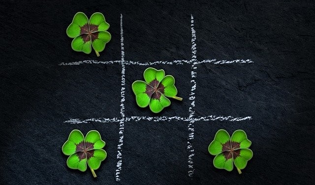

Piškvorky
Piškvorky jsou velmi oblíbená společenská hra pro dva hráče. Obvykle se hraje s tužkou a čtverečkovaným papírem. Nyní můžete využít naši skvělou aplikaci, takže už nepotřebujete ani tužku a nemusíte hledat čtverečkovaný papír. Přejeme vám hodně zábavy!